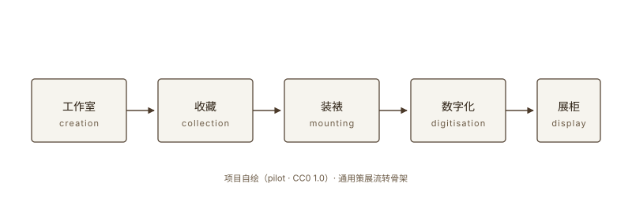
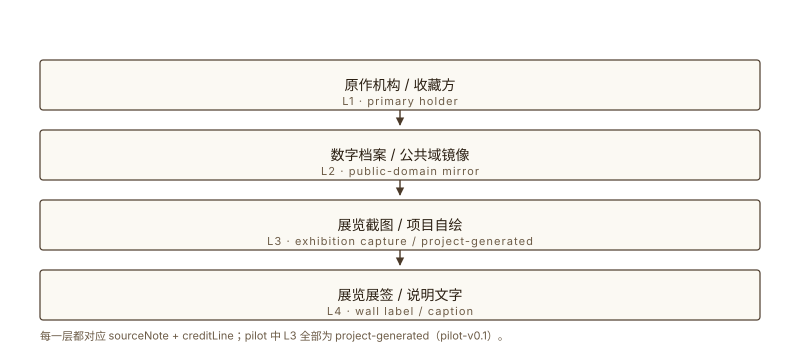
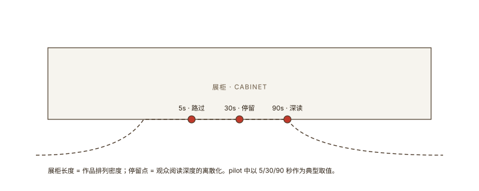

展览地图
四节内容：起点 → 流转 → 阅读 → 展示。每节配 1 张自制示意图 + 1 个 deep / evidence / thinking / model 模块。
起点
为什么从一件作品开始
选择单件作品作为展览起点，是因为它能让观众把注意力收回到材料本身。一张纸、一页手稿、一幅小画，比一段通史更能让研究者站住脚。这一节回答一个问题：为什么这场 pilot 选择从单件作品开始，而不是从时代开始。
一件作品是展览最具体的研究单位，也是最朴素的策展切口。
观察下面 4 张自制示意图卡，尝试判断它们之间可能的共同主题。
自制图 1：单件作品的旅程

自制图：单件作品从工作室到展柜的五步流转路径。
项目自绘。基于通用策展流转实践绘制，无具体作品引用。
Pilot 项目 / Project-generated diagram (CC0 1.0)
流转
它如何在世间旅行
每一件作品都有自己的旅行史。它从工作室出发，经过收藏家之手，进入图书馆、博物馆、私人档案。一件作品可能安静几百年，也可能被反复装裱、修复、拍摄、再出版。这一节考察作品的流转路径，并把它转译为一张可被阅读的示意图。
作品的流转史比作品的创作史更长，也更复杂。
自制图 2：源出处链

自制图：从原作机构到展览展签的源出处链。
项目自绘。基于通用数字展览源出处实践绘制。
Pilot 项目 / Project-generated diagram (CC0 1.0)
阅读
研究者如何对待它
同一件作品在不同研究者眼中可能指向完全不同的意义。一段注释可以改变作品的归属，一次材料检测可以推翻过去的判断。pilot 演示的不是某位研究者的结论，而是研究方法本身：把材料 → 证据 → 推理 → 解释串成一条可被复述的链。
研究者的工作不是给出最终答案，而是不断收紧问题。
自制图 3：观看动线与停留时间

自制图：观众动线与停留时间示意。
项目自绘。基于通用观众行为观察绘制。
Pilot 项目 / Project-generated diagram (CC0 1.0)
展示
它如何被放在观众面前
策展不是简单地把作品挂起来。它涉及光线、动线、说明文字、展柜高度、观众停留时间、拍照政策。这一节讨论作品从仓库走向展柜的最后一步，并把展览的最终形态定义为观众在展柜前停留的几十秒。
展览的最终形态由观众在展柜前停留的几十秒决定。
自制图 4：策展四角模型
自制图：策展四角模型的可视化骨架（pilot 阶段以 object-journey.svg 充当布局占位）。
项目自绘。基于通用策展方法绘制。
Pilot 项目 / Project-generated diagram (CC0 1.0)
术语表
- 单件作品研究
- 以一件具体作品为研究单位的方法。它要求研究者同时处理材料、流转、阅读与展示四个维度，而不是把作品淹没在时代叙事里。单件作品研究是策展与艺术史研究最朴素的共同起点。
- 流转链
- 作品从工作室到达观众手中的全部节点和路径。它包括收藏、装裱、修复、出版、数字化、再展览等环节。一条完整的流转链比作品本身的创作史更长，也更复杂。
- 源出处
- 作品或图像的原始机构或档案。引用任何图像、文本或截图时必须能指回原始出处，否则不构成合格引用。源出处是展览可信度的起点，也是审计凭证的入口。
- 权利边界
- 展览中每张图像、每段文字被允许复用的具体范围。权利边界由原作机构而非展览方决定，展览方只能声明自己的使用方式是否符合原作机构的政策。
- 自制示意图
- 由展览项目自身绘制的示意图（通常为 SVG）。它不承担展示原作的任务，而是承担解释模型、流程或关系图的任务。在 pilot 中，所有示意图均为 project-generated。
- pilot
- 在投入正式版本之前，用最小可运行实例验证模板或流程是否能跑通。pilot 不部署到 live，只在本地或受控环境验证组件。pilot 通过后才进入 stable 版本线。
权利与来源说明
本 pilot 所有示意图均为 project-generated（项目自绘 SVG，CC0 1.0）。本 pilot 不引用任何真实馆藏图、任何机构截图、任何具体作品影像。
权利边界由来源机构决定；pilot 中权利边界通过 sourceNote + creditLine 双字段共同声明。